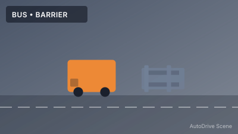
bus, barrier - Bus stopped at intersection with construction barriers on th...
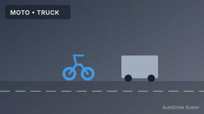
motorcycle, truck - Motorcycle passing a large truck on highway. Clear visibilit...
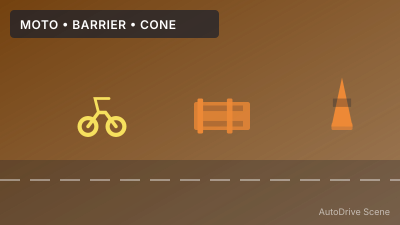
motorcycle, barrier, traffic-cone - Motorcycle navigating through road work zone with traffic co...
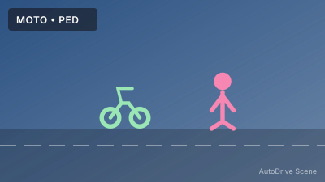
motorcycle, pedestrian - Motorcycle waiting at crosswalk with pedestrians crossing. U...
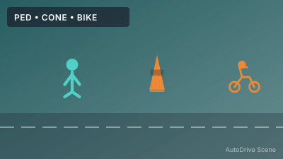
pedestrian, traffic-cone, cyclist - Cyclist and pedestrians sharing path near construction cones...
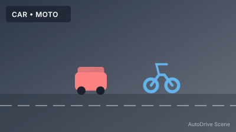
car, motorcycle - Car and motorcycle side by side at traffic light. Downtown u...
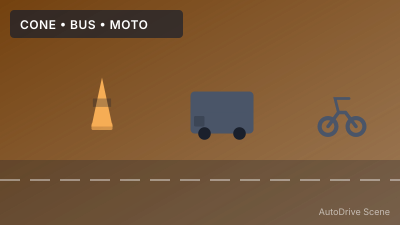
traffic-cone, bus, motorcycle - Bus and motorcycle navigating through temporary traffic cone...
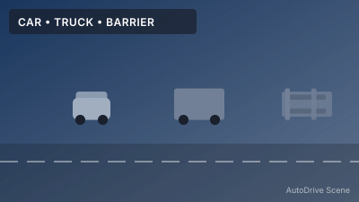
car, truck, barrier - Car following truck on highway with concrete barriers. Heavy...
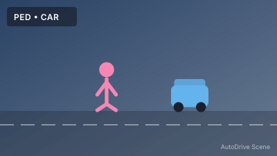
pedestrian, car - Pedestrians crossing street while car waits at crosswalk. Ur...
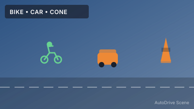
cyclist, car, traffic-cone - Cyclist in bike lane with cars passing by. Road work cones m...
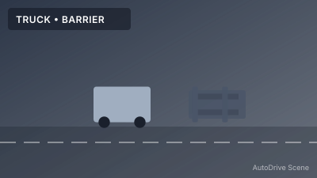
truck, barrier - Large commercial truck navigating through construction barri...
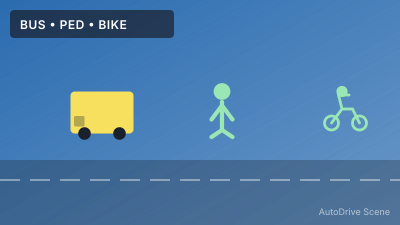
bus, pedestrian, cyclist - Bus at bus stop with cyclists passing and pedestrians boardi...
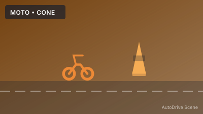
motorcycle, traffic-cone - Motorcycle rider weaving through traffic cone marked tempora...
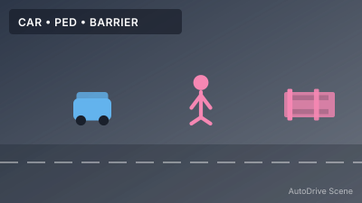
car, pedestrian, barrier - Car stopped at barrier-guarded pedestrian zone. Downtown sho...
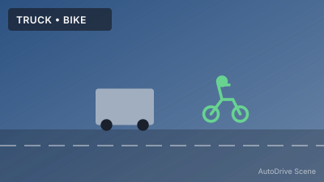
truck, cyclist - Cyclist sharing road with delivery truck. Urban delivery rou...
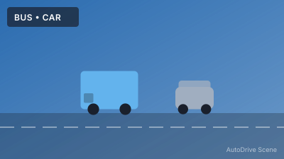
bus, car - Bus in dedicated lane with cars in adjacent lanes. Public tr...
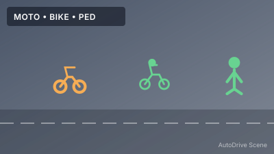
motorcycle, cyclist, pedestrian - Mixed traffic with motorcycle, cyclist, and pedestrians. Sha...
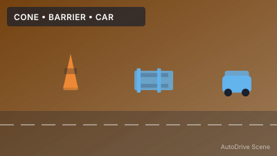
traffic-cone, barrier, car - Cars navigating through construction zone with barriers and ...
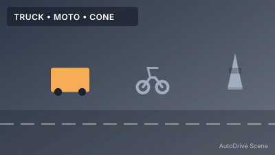
truck, motorcycle, traffic-cone - Truck and motorcycle on road marked with traffic cones. Lane...
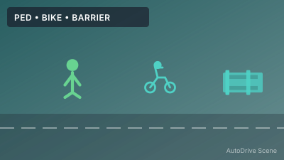
pedestrian, cyclist, barrier - Pedestrians and cyclists on separated path with barrier prot...